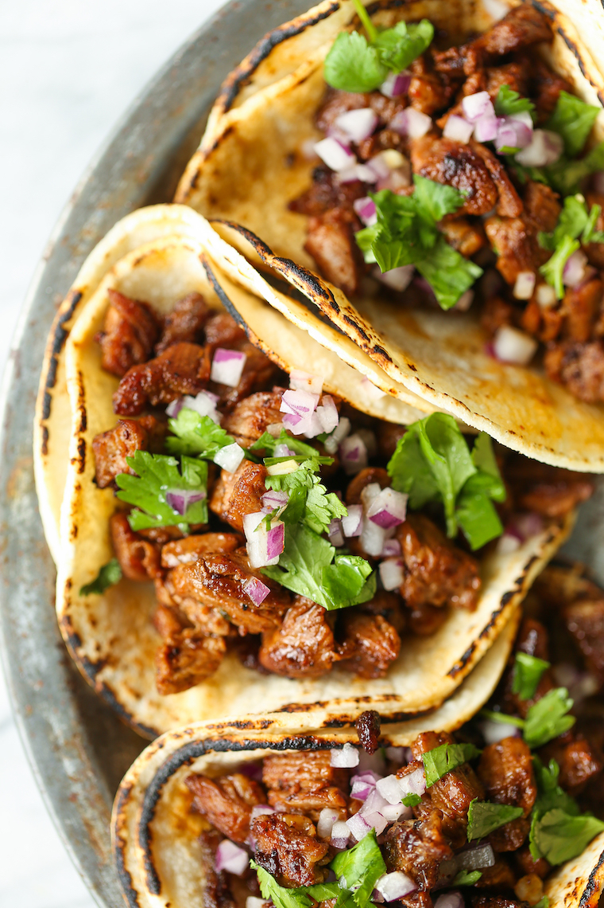

Recipe Name

| Prep: 1 hour 15 mins |
Cook: 15 minutes |
Total: 1 hour 30 mins |
| Servings: |
Yield: 6 servings |
Ingredients
- 2 tablespoons reduced sodium soy sauce
- 2 tablespoons freshly squeezed lime juice
- 2 tablespoons canola oil, divided
- 3 cloves garlic, minced
- 2 teaspoons chili powder
- 1 teaspoon ground cumin
- 1 teaspoon dried oregano
- 1 1/2 pounds skirt steak, cut into 1/2-inch pieces
- 12 mini flour tortillas, warmed
- 3/4 cup diced red onion
- 1/2 cup chopped fresh cilantro leaves
- 1 lime, cut into wedges
Instructions
- In a medium bowl, combine soy sauce, lime juice,
1 tablespoon canola oil, garlic, chili powder, cumin and oregano.
- In a gallon size Ziploc bag or large bowl, combine soy sauce mixture
and steak; marinate for at least 1 hour up to 4 hours,
turning the bag occasionally.
- Heat remaining 1 tablespoon canola oil in a large skillet over medium high heat.
Add steak and marinade, and cook, stirring often, until steak has browned and
marinade has reduced, about 5-6 minutes, or until desired doneness.
- Serve steak in tortillas, topped with onion, cilantro and lime.